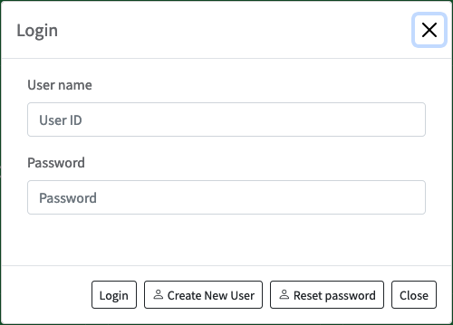
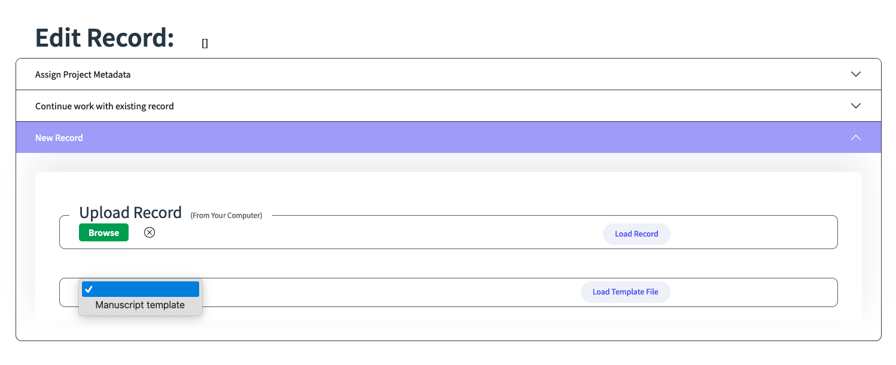
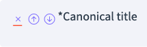

manuForma is a tool that allows you to create TEI-XML files of manuscripts and other
related entities inside your browser without the need of external programs like
OxygenXML. You can submit the files to a GitHub repository or save them on your
local hard drive. Whenever you want to continue working on your records, you can
again load them into manuForma. It also allows you to reference different records to
model dependencies between them, such as persons who are referenced as authors in
work records. And you can even express complex relationships between your
records.
What this Handbook does
This handbook will introduce you to the functionalities of manuForma. You
will learn how to create records, how to load existing records, how you can edit
them and how to create references between them. In other words, this handbook is
concerned with the technical side of TEI records. You will not learn how to describe
manuscripts from a paleographic point of view. We assume that you already know these
things. manuForma provides explanations about the intended usage of the fields when
you hover your mouse over the “?” button next to the field’s name.
Creating an Account
On the start page, click the button in the upper right corner. The login screen
will open.
Click on “Create New User”.
Your user name should consist of the first letter of your firstname and your
lastname. No caps, no spaces. E.g., the user name for “Max Mustermann” is
“mmustermann”.
Fill in the remaining fields and click “Create Account”.
On the start page, click the button in the upper right corner. The login screen
will open.
Enter your user name and password.
Click “Login”.

Managing Records
On the entry page select the kind of entity for you want to work with. As of now,
manuForma supports manuscripts, persons, places, works, and relationships. Creating,
opening, and submitting records works the same for all entities.
Opening Records from the
Database
manuForma will open the main page view where you can search for previously
created records and create new records.
Click on the collapsible titled “Continue with existing record”.
You can browse the list of records available in the database by clicking
“Browse”.
Enter a filename under the header “Search” and click “Search” to look
for a specific record.
If you the internal identifier for the record, you can search for it by entering
it into the field “Search by ID” and clicking it.
Click “Load selected record” and the record will be loaded into manuForma.
B. Creating New Records
manuForma will open the main page view where you can create new records and
search for previously created records.
Open the list under the header “New Record” and select the “Manuscript template”
from the selection pane. Click the button “Load Template File”. 
On the top of the screen, click on the option “Admin Metadata”.
In the upper right corner click the button “Submit to GitHub” to save the record
to your GitHub repository.
You can also send the record directly to your application by clicking “Submit to
Github”. Enter a one-sentence description of your work. In this case, we suggest
“Created record from own observations.” or “ “Created record from catalog
description.”
Click “Save”.
Congratulations! You created your first record with manuForma.
C. Uploading Records from your
Computer
On the entry page select the kind of entity for which you want to open. As of
now, manuForma supports manuscripts, persons, places, and titles.
manuForma will open the main page view where you can search for previously
created records and create new records.
Under the header “Upload”, click “Browse”.
You can then select a file from your computer.
Click “Load” to upload the file to manuForma.
If the file is compatible with the schema, you can edit it with this
configuration of manuForma.
In order to save the file to GitHub or your database, proceed from step 4 in
“Creating New Records”.
Saving Records
Once you have completed your work on the record, you need to submit it to
the Github repository, which is the equivalent to saving it. Changes are not
automatically saved in manuForma!
Click on “Submit to Github”.
Write short summary of the changes you made to the record. Here are some
suggestions:
“Linked to work/person records.”
“Added incoded document/heritage data.”
“Added bibliographic items.”
“Added codicological observations from the original manuscript.” / “Added
codicological observations from a catalog.”
Click “Save”.
Go the Github repository and select “Pull requests” from the horizontal menu
at the top of the page.
Select the pull request whose ID matches the record you just submitted to
Github.
You can examine the TEI code by clicking on “Files changed”.
If everything is in order and Github indicates that there are no problems
with the record, click “Merge pull request”.
Your record is now saved to the repository.
⁉️ Sometimes GitHub will display a Merge Error when the newly made changes
are in conflict with another submission. Only try to solve these kinds of errors
if you know what you are doing! Otherwise contact the project’s DH
specialist!
Edit Records
Subsections
To enter data, select one of the subsections on the left side of the application.
Each subsection is subdivided into collapsibles that aggregate the data into smaller
parts. The headlines of collapsibles summarize the kinds of data that can be
entered. Sometimes these headlines change when data have already been entered,
summarizing the main points.
The largest units you can edit in manuForma are collapsibles–units containing several
fields and features. Together they often comprise complex items such as
bibliographic entries.
Create collapsibles
To create a new collapsible, open one of the existing collapsibles in the document
and select the first grey button starting with a plus sign and then a description of
its contents. For example:
Move collapsibles
To reorder a sequence of collapsibles, open the collapsible in question and select
the down or up arrow of the top most field.
Delete collapsibles
To delete a collapsible, open the collapsible in question and select the X button of
the top most field.
Fields
Fields are the main components that you will interact with in manuForma. They are
usually blank fields into which you enter text. Others offer dropdown menus with
options to choose from, allowing us to maintain consistent in our terminology. And
some fields are filled out automatically when linking records like persons, works,
etc.
💡 Because there can be dozens of different fields in large records
like manuscripts, manuForma offers concise help texts. They may be found to the
right of the field name, mouse over the question mark to activate it.
💡 The MAJLIS team is using domain-specific vocabulary to describe
bibliographic, codicological, paleographic and other phenomena. This allows our team
to use manuForma more efficiently without the need to learn how they are called in
TEI. In case you do want to know the field’s original name in TEI, mouse over the
TEI symbol to the right of the field name.
The templates for the different entity types are equipped with many fields for you to
fill in. However, it may be necessary to create, delete, or move fields to fit the
needs of your entry.
Create Fields
To create a new field, go the field containing (it may take little while to find the
correct field) and open the dropdown list. Select the desired field. Click “Add
field”.
Move Fields
To reorder a sequence of fields, select the down or up arrow of the field.
Delete Fields
To delete a field, click the X button of the field.

Features
Features provide additional information to fields. You never have to enter text into
features, as they usually offer dropdown menus with options to choose from. Other
features are filled out automatically when linking records like persons, works,
etc.
Create Features
To create a new feature, go the field containing (it may take little while to find
the correct field) and open the dropdown list. Select the desired feature. Click
“Add feature”.
Delete Features
To delete a feature, click on the X next to the feature’s name.
Add References to Other Records
At the moment you can add references to the following elements: placeName, author,
personName, and title. The process of referencing them is the same for all of
them: 1. Go to an element that supports references or create one. 2. In
the same row as the element name, click the option “Look up”. 3. A small
window opens. Write the name of the record into the search bar and press the
magnifying glass button. 4. Choose an entry from the list of results and click
“Add to Record”. Then close the window. 5. The name of the record has been
copied into the element and the URI has been added to the ref attribute.
💡 If the record you want to reference does not exist yet, you can
create one on the spot. Click the “New person name” / “New place name” / “New title
name” button. And you will be directed to the correct form. Note that you
have to submit and merge the new record before you can find it in
manuForma.
Create Relationships between Records
We use the same basic principles for creating relationships that we already know from
the section on references–the main difference is that several records are looked
up.
Create a Relation element. It should contain most of the fields you need–but
when dealing with groups of people or items you may need to create additional
fields.
In the field “Description of relation” select an option from “Choose the type”.
If the relationship contains in its description [Subject] and [Object], proceed
with a). If it contains [Mutual], proceed with b).
In the relation “Abraham is the father of Yahya” the person entry of
Abraham is the subject and the entry of Yahya is the object of the
statement. The relationship is calling for the fields “Subject of
relation” for Abraham and “Object of relation” for Yahya. Look up the
identifier for both fields as described above in the section “Add
References to Other Records”.
In the relation “Yefet and David corresponded with each other” both
persons are mutuals of the statement. The relationship is therefore
calling for the field “Mutual relation” for both Yefet and David. Look
up the identifier for both fields as described above in the section “Add
References to Other Records”.
Edit Transcriptions, Translations and Descriptive
Texts
manuForma does not offer a fully fledged text editor! Instead, users
can enter markup like italic text in selected fields using a number of special
characters, or Markdown.2
💡 The technology behind manuForma, XForms, does not allow us to
create rich text fields that we know from other software. For this reason we had to
come up with this workaround. manuForma will convert the markdown characters into
the proper TEI tags when submitting the file to GitHub, creating valid TEI. Whenever
a record is loaded into manuForma, the TEI commands are replaced with markdown and
you can continue to edit the texts.
So far, users can add the following text markup:
Paragraphs
To create paragraphs, use a blank line to separate one or more lines of text.
Markdown
TEI
Rendered Output
I really like using Markdown. I think I'll use it to format all of
my documents from now on.
<p>I really like using Markdown.</p> <p>I think
I'll use it to format all of my documents from now
on.</p>
I really like using Markdown. I think I’ll use it to format all of my
documents from now on.
Linebreaks
To create a line break or new line, end a line with two or more spaces, and then type
return.
Markdown
TEI
Rendered Output
This is the first line. And this is the second line.
<p>This is the first line.<lb/> And this is the second
line.</p>
This is the first line. And this is the second line.
Italic text
To italicize text, add one asterisk before and after a word or phrase.3
Markdown
TEI
Rendered Output
Italicized text is the *cat's meow*.
Italicized text is the <emph>cat's meow</emph>.
Italicized text is the cat’s meow.
Extending an existing record
for another project
Reusing TEI records from other projects is a complex process that cannot only be
performed in manuForma. The most important prerequisite is to align the legacy data
with the TEI schema used in manuForma – otherwise fields may not be displayed and
new additions may not be reliably saved.
💡 If you are dealing with a large number of records you may want to
add the project metadata of your research project to all files in Oxygen XML or
another XML processor for convenience.
In manuForma you can add the project metadata of your research project to individual
records in the main menu:
Select the collapsible “Assign project metadata”.
Choose the project from the list.
Click “Load Project Metadata”.
Proceed with editing or submitting the modified record, as described in other
sections.